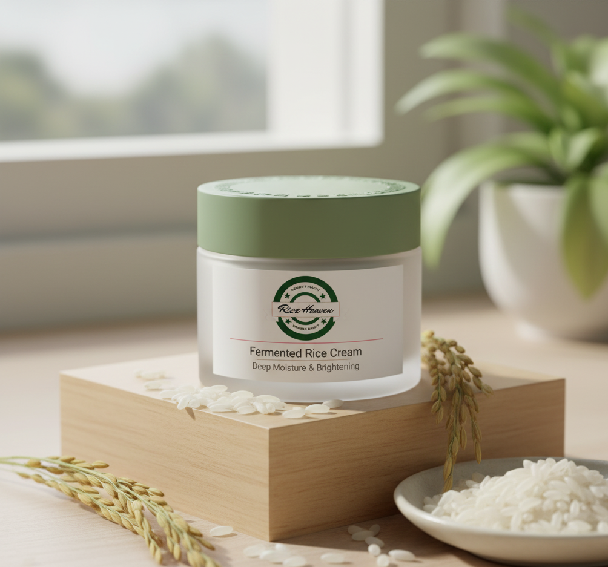
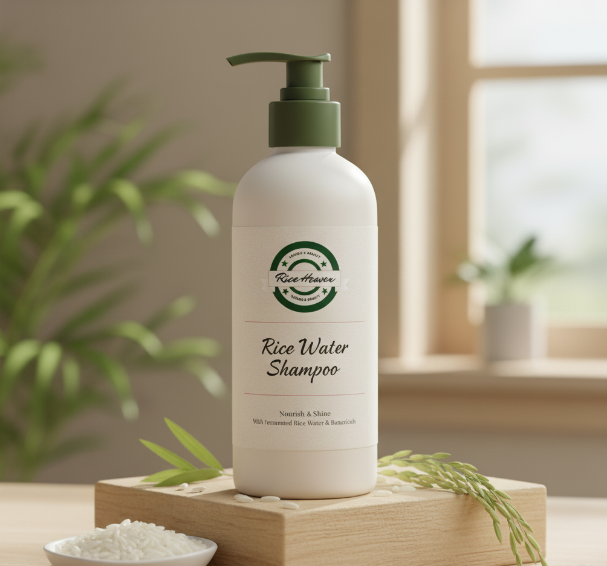
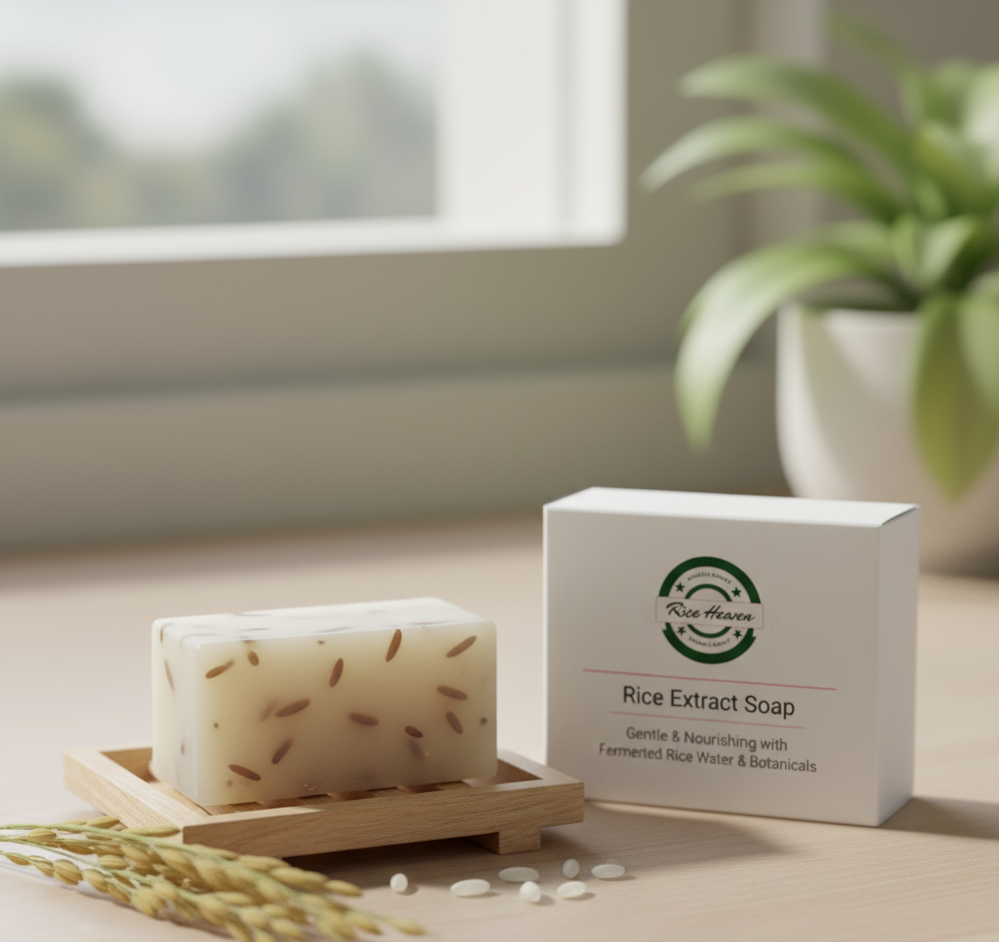

Our Complete Collection
From luminous skin to lustrous hair, discover the full range of rice-based nourishment.
SKINCARE ESSENTIALS

Rice Water Toner
Balances, Brightens, and Prepares Skin
This gentle, pH-balancing toner uses fermented rice water, rich in antioxidants, to visibly **brighten** your complexion and minimize the appearance of pores.
$19.99HAIR NOURISHMENT

Rice Water Shampoo
Nourish & Shine with Fermented Rice Water
Harnessing the ancient secret of stronger hair, this shampoo gently cleanses the scalp while fermented rice water **strengthens hair strands** and enhances natural shine.
$29.50BODYCARE

Rice Extract Soap
Gentle & Nourishing for Body and Face
A luxurious bar soap that uses **rice extract** to deeply cleanse while maintaining the skin's natural moisture. Provides a light, gentle exfoliation.
$12.00